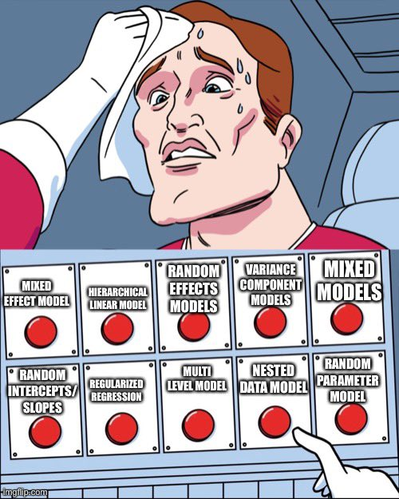
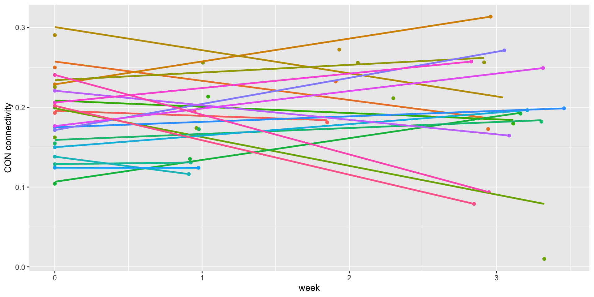
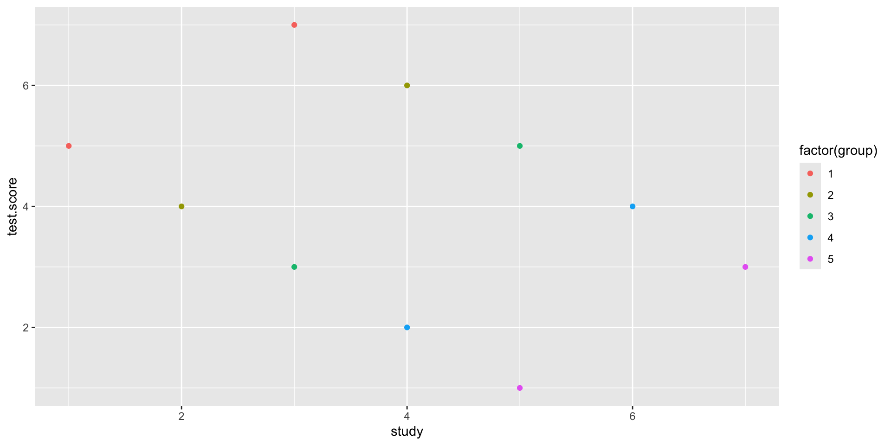
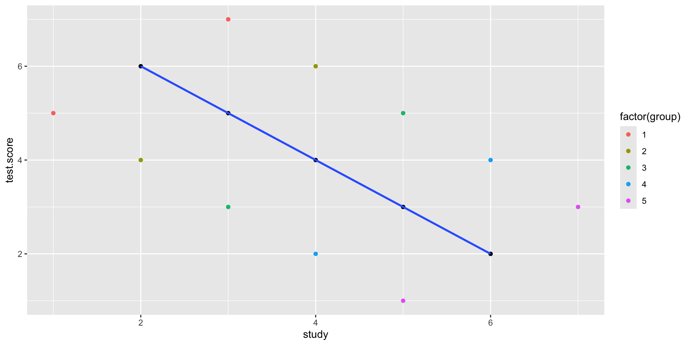
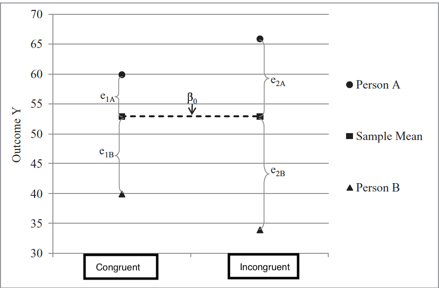
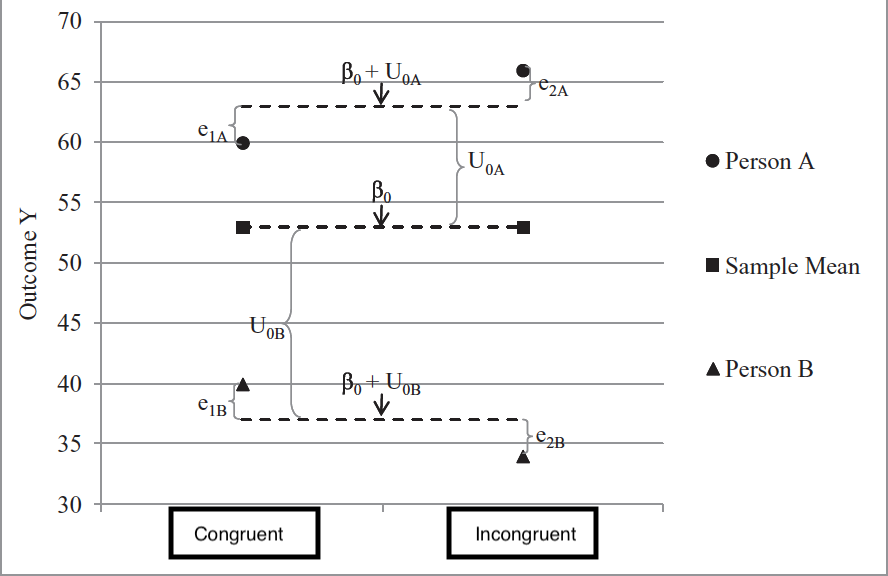
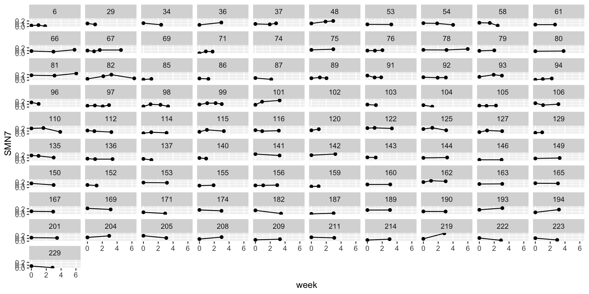
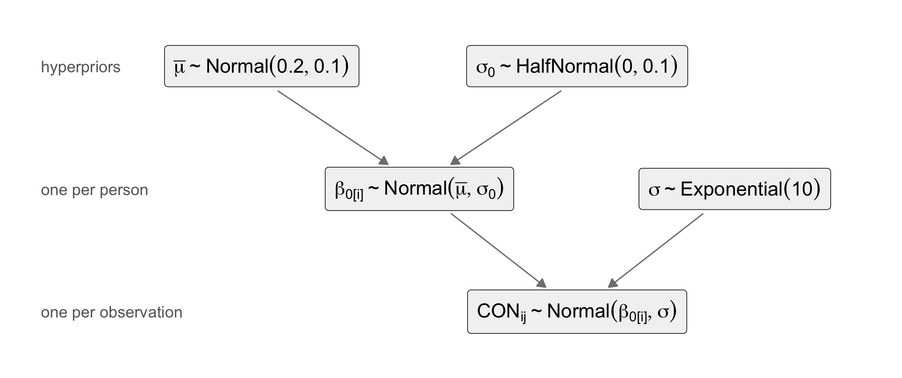
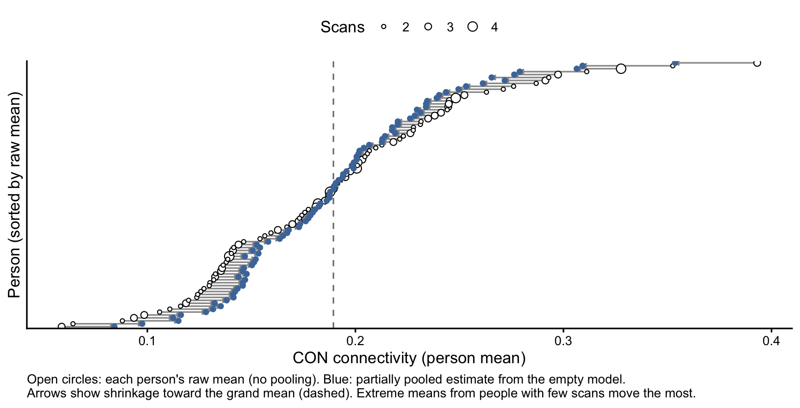
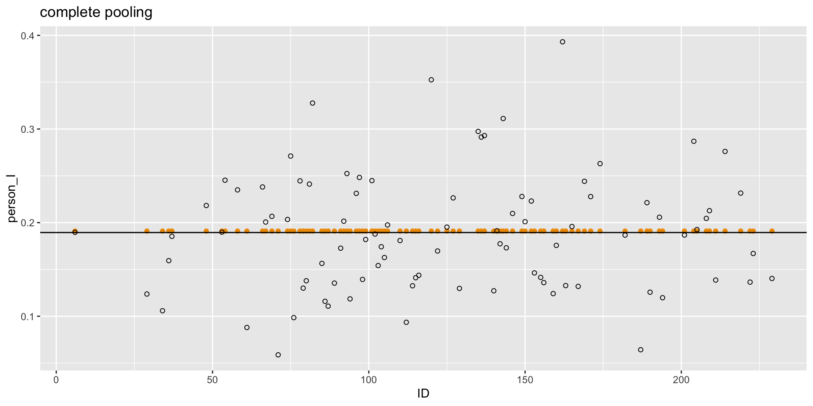

Multilevel models 1: varying intercepts and pooling
So many names, one model

MLM review
\[{Y}_{i} = b_{0} + b_{1}X_{i} + ... +\epsilon_{i}\]
\[{Y}_{ij} = b_{0} + b_{1}X_{ij} + ... +\epsilon_{ij}\] where i refers to the cluster or group (e.g., a person) and j to the observations within it
Our running example
- 91 people (people with Parkinson’s disease,
diagnosis = "PD", and controls,"CTRL"), each scanned 2–4 times: 225 rows in all. CONandSMN7are resting-state connectivity scores for two brain networks;timeis time since the first scan (0–6);weekis a finer-grained version of it.- Observations (j) are nested in people (i). Some examples below are conceptual (a Stroop task, students in schools); whenever there’s a plot, it’s these data.
Twenty people, twenty lines

Empty model
Level 1 \[{Y}_{ij} = \beta_{0i} + \varepsilon_{ij}\]
Level 2 \[{\beta}_{0i} = \gamma_{00} + U_{0i}\]
\[{U}_{0i} \sim N(0, \tau_{00}^{2})\] \[{\varepsilon}_{ij} \sim N(0, \sigma^{2})\]
The empty model, pictured

\[{Y}_{ij} = \gamma_{00} + U_{0i} + \varepsilon_{ij}\]
Akin to ANOVA if we treat \(U_{0i}\) as between subjects variance & \(\varepsilon_{ij}\) as within subjects variance.
Random and fixed effects
Level 1: \[{Y}_{ij} = \beta_{0i} + \varepsilon_{ij}\]
Level 2: \[{\beta}_{0i} = \gamma_{00} + U_{0i}\] Combined: \[{Y}_{ij} = \gamma_{00} + U_{0i} + \varepsilon_{ij}\]
\(U_{0i}\) is considered a random effect, as it varies across our grouping
\(\gamma_{00}\) is considered a fixed effect, as it is what is fixed (average) across our grouping
The empty model in brms
library(brms)
mlm.1 <-
brm(family = gaussian,
CON ~ 1 + (1 | ID),
prior = c(prior(normal(0.2, 0.1), class = Intercept), # CON averages about 0.2
prior(normal(0, 0.1), class = sd), # people differ by less than 0.1
prior(exponential(10), class = sigma)), # scan-to-scan noise, mean 0.1
iter = 5000, warmup = 1000, chains = 4, cores = 4,
sample_prior = "yes",
data = mlm,
backend = "cmdstanr",
file = "mlm.1b")Three priors, on CON’s own scale (mean 0.19, SD 0.07): the Intercept prior is for the average person, the sd prior is for how much people differ from that average (\(\sigma_0\)), and sigma is the scan-to-scan noise within a person. Where these come from is the last of the six intuitions below.
mlm.1 summary
Family: gaussian
Links: mu = identity
Formula: CON ~ 1 + (1 | ID)
Data: mlm (Number of observations: 225)
Draws: 4 chains, each with iter = 5000; warmup = 1000; thin = 1;
total post-warmup draws = 16000
Multilevel Hyperparameters:
~ID (Number of levels: 91)
Estimate Est.Error l-95% CI u-95% CI Rhat Bulk_ESS Tail_ESS
sd(Intercept) 0.06 0.01 0.05 0.07 1.00 5285 7864
Regression Coefficients:
Estimate Est.Error l-95% CI u-95% CI Rhat Bulk_ESS Tail_ESS
Intercept 0.19 0.01 0.18 0.20 1.00 8353 9716
Further Distributional Parameters:
Estimate Est.Error l-95% CI u-95% CI Rhat Bulk_ESS Tail_ESS
sigma 0.05 0.00 0.04 0.05 1.00 9499 11030
Draws were sampled using sample(hmc). For each parameter, Bulk_ESS
and Tail_ESS are effective sample size measures, and Rhat is the potential
scale reduction factor on split chains (at convergence, Rhat = 1).How much is between people? The ICC
The intraclass correlation: the share of the total variance that is between people,
\[\text{ICC} = \frac{\sigma_0^2}{\sigma_0^2 + \sigma^2}\]
Compute it draw by draw, so it gets its own posterior:
Reading the ICC
About 59% of the variation in CON is stable differences between people; about 41% is scan-to-scan change within a person. Equivalently, two scans from the same person correlate about 0.59.
MLM as default and make it maximum
If you have data like this you should analyze like this! If you don’t, then you are losing information (GEE being a potential exception).
The question often is about which random effects to fit. There are multiple opinions, but mine is to start maximum, and then work downward (ie simplify) if necessary/consistent with theory. It doesn’t really hurt to include them, especially within Bayesian estimation!
MLM intuitions
Anytime you have repeated DVs you should use MLM as opposed to doing aggregation outside the model. While that should be your default, it is helpful to conceptualize why it is helpful.
- Aggregation is bad
- Regressions within regressions (ie coefficients as outcomes)
- Questions at different levels
- Variance decomposition
- Learning from other data through pooling/shrinkage
- Parameters that depend on parameters
1. Aggregation obscures hypotheses
What if people had more than 1 DV, like we do with time? What do you do with multiple items, multiple trials, multiple ____ ?
Two options: (1) collapse and average across them, or (2) model every observation, nested in its person (MLM). The next slides show what (1) can hide.
Example

Aggregating
Could aggregate across group

Separate lines for each group

1. Aggregation obscures hypotheses
Between person H1: Do students who study more get better grades?
Within person H2: When a student studies, do they get better grades?
H1 and H2 are independent from one another! Aggregation collapses the two. When you have nested data with many DVs it is important to not aggregate.
#compositeskill
2. Regressions within regressions
Helps to take multilevel and split it into the different levels.
Level 1 is the smallest unit of analysis (students, waves, trials, family members)
Level 2 variables are what level 1 variables are “nested” in (people, schools, counties, families, dyads)
We use the level 1 coefficients as outcomes in a level 2 regression, while level 1 is also estimating its own regression (coefficients as outcomes).
Stroop example
We calculate stroop scores by looking at repeated trials of congruent vs not congruent. This is dummy coded such that the \(\beta_{1}\) reflects the average stroop effect. How much slower are people in incongruent trials?
\[Y_{i} = \beta_{0} + \beta_{1}X_{1} + \varepsilon_i\]
Stroop as an MLM
\[Y_{trials, i} = \beta_{0i} + \beta_{1i}X_{trial,i} + \varepsilon_{trial,i}\]
\[\beta_{0i} = \gamma_{00} + U_{0i}\] \[\beta_{1i} = \gamma_{10} +\gamma_{11}Age_i+ U_{1i}\]
Our B1 coefficient indexes the stroop effect. However, people differ on this stroop effect. There is some average effect (fixed effect) that people vary around. Each person has some personal \(\beta_1\), which we find using Level 1 data. From there we can also ask questions (with regressions) about that random variable.
People differ
Same idea with our data: each person has their own average SMN7 connectivity, and people vary around the grand mean.
Code
example <- mlm # same data as above
set.seed(11)
ex.random <- example %>%
dplyr::select(ID) %>%
distinct() %>%
slice_sample(n = 3)
example2 <-
left_join(ex.random, example)
g2<- ggplot(example2,
aes(x = week, y = SMN7, group = ID)) + geom_point() + stat_smooth(method="lm", formula=y~1, se = FALSE) + facet_wrap( ~ID) +
geom_hline(yintercept = mean(example$SMN7)) + ylab("SMN7 connectivity") + xlab("week") +
geom_label(label="Grand mean ", x=1,y=mean(example$SMN7),
label.size = 0.15)
g2
Distribution of person means

3. Different levels
To sum up the first two ways to think about regression, we take a relationship that could be simplified by aggregation, and conduct regressions from regressions. (Regression inception)
The third way is to think of questions at different levels. At level 1 we can ask lower-unit questions e.g., if trials are nested within person, what predicts lengthier trials?
If level 1 is made up of repeated observations, then we can ask level 1/observation level questions like does failure at the trial level impact future trial performance.
Level 2 questions
At level 2 we can ask broader-unit questions. E.g., is age associated with stroop differences
Often level 2 is between person variables.
Both levels are simple regressions. Level 2 uses coefficients from level 1 as DVs. Level 1 variables are time varying, level 2 variables are time invariant
4. Variance decomposition
For standard regression, we think of error as existing in one big bucket called \(\varepsilon\) . Everything that we do not know goes into that bucket, from measurement error to unmeasured important factors.
For MLMs we will be breaking up ( \(\varepsilon\) ) into multiple buckets. These useful “buckets” (Us) are what we refer to as random/varying effects.
\[Y_{trials, i} = \beta_{0i} + \beta_{1i}X_{trial,i} + \varepsilon_{trial}\] \[\beta_{0i} = \gamma_{00} + U_{0i}\] \[\beta_{1i} = \gamma_{10} +\gamma_{11}Z_i+ U_{1i}\]
One bucket of error

Assume a simple intercept only model where we aggregate across types of trials.
Person-specific buckets

A MLM intercept only model takes what was previously chalked up to error and reassigns it into person specific “buckets”
A model for the variance
Model for the means (like normal) and now we have a model for the variance (random effects!)
We will treat random effects as variables themselves e.g. individual differences in reaction time or stroop effect. They index how much people DIFFER on some effect. e.g. does everyone show the same stroop effect?
We can relate the random effects to other random effects e.g., do people who show an effect have a slower reaction time?
5. Shrinkage/partial pooling
We treat our group variable as coming from a population. All groups are alike (because they are from the same population), but different in their own way. Because of this it is helpful to use information from other groups to help make predictions.
We do this in standard regression where we make predictions based on values from the whole dataset (not just binned Xs). We want to pool as this leads to better predictions as we are not overfitting our data!
Where do the U’s come from?
If we take our simplified stroop effect model (an empty model)
\[Y_{trials, i} = \beta_{0i} + \varepsilon_{trial}\]
\[\beta_{0i} = \gamma_{00} + U_{0i}\]
Where does \(U_{0i}\) come from? If we calculated each by hand, through taking the average reaction time for a person i and subtracting that from the grand mean reaction time, would that equal \(U_{0i}\) ?
Complete, partial and no pooling
Complete assumes everyone is the same, with \(U_{0i}\) being zero for everyone.
No pooling is if we calculate every person’s effect with a separate regression, subtracting out the grand mean.
Partial pooling is in the middle, a weighted average between the two. For those with fewer trials there is less information for a particular individual, thus the complete pooling estimate will be given more weight. If someone has a lot of data, their weighted average is closer to no pooling.
Partial pooling prevents both over and under fitting of your data, leading to increased out of sample predictions.
Complete pooling
Ignores any dependency. Doesn’t learn from others, assumes everyone is the same. Underfits the model.

No Pooling
Everyone is unique and we cannot learn from others. Leads to overfitting

Partial pooling aka shrinkage aka regularization
Code

Thin grey: each person’s own line (no pooling). Thick black: one line for everyone (complete pooling). Partial pooling lands in between, pulling each person toward the black line, more so for people with little data. We’ll see real estimates once we fit the model.
Partial pooling as learning
Partial pooling aka shrinkage provides the optimal amount of learning from others. Assumes people come from the same distribution but are distinct from one another.
If you have a little data, then the safe bet is to look at the average. If you have a lot of data, you can ignore others.
In a way, this is similar to Bayesian reasoning where learning is based on how much information you have about a person with other people serving as a prior.
6. Parameters that depend on other parameters
\[\text{y}_{ij} \sim \operatorname{Normal}(\mu_{ij}, \sigma)\] \[\mu_{ij} = \beta_{0[i]}\]
\[\beta_{0[i]} \sim \operatorname{Normal}({\bar \mu}, \sigma_0)\] \[{\bar \mu} \sim {\operatorname{Normal}(0.2, 0.1)}\] \[\sigma_0 \sim {\operatorname{Half-Normal}(0, 0.1)}\] \[\sigma \sim {\operatorname{Exponential}(10)}\]
This is the model we fit as mlm.1.
Hyperprior
We now have a prior for the population of effects. We typically put a prior directly on parameters. Here, because we are using a multilevel model, we are interested in the population of intercepts, not just a single intercept.
Intercept in simple regression –> a (prior/posterior) distribution of possible scores
Intercept in mlm –> a distribution of group/cluster intercepts, described by its own mean (\(\bar\mu\)) and SD (\(\sigma_0\)). Those describe the population of people, not just the 91 we happened to sample.
Priors with their own priors
The person intercepts \(\beta_{0[i]}\) get a prior whose parameters (\(\bar\mu\), \(\sigma_0\)) are themselves estimated: a prior with its own priors.
Code
lab <- tribble(~x, ~y, ~label,
1.2, 3, "bar(mu) %~% Normal(0.2, 0.1)",
3.2, 3, "sigma[0] %~% HalfNormal(0, 0.1)",
2.2, 2, "beta[0*'['*i*']'] %~% Normal(bar(mu), sigma[0])",
4.2, 2, "sigma %~% Exponential(10)",
3.2, 1, "CON[ij] %~% Normal(beta[0*'['*i*']'], sigma)")
arrows <- tribble(~x, ~y, ~xend, ~yend,
1.3, 2.8, 2.0, 2.2, 3.1, 2.8, 2.4, 2.2,
2.4, 1.8, 3.0, 1.2, 4.0, 1.8, 3.4, 1.2)
ggplot() +
geom_segment(data = arrows, aes(x = x, y = y, xend = xend, yend = yend),
arrow = arrow(length = unit(0.25, "cm"), type = "closed"), colour = "grey50") +
geom_label(data = lab, aes(x = x, y = y, label = label), parse = TRUE, size = 5.5,
label.padding = unit(0.4, "lines"), fill = "grey95") +
annotate("text", x = -0.2, y = c(3, 2, 1), label = c("hyperpriors", "one per person", "one per observation"),
hjust = 0, colour = "grey40", size = 4.5) +
xlim(-0.2, 5) + ylim(0.6, 3.4) + theme_void()
Two kinds of priors
If we are estimating a mean, we can divide that up into two priors:
A distribution of our best guess at the mean e.g., N(3,.5) means I am very confident in my guess vs N(3,50). This is all about the mean.
A distribution that represents the spread around that mean e.g., N(0,1) suggests small spread vs (0,100) suggest people may differ a lot (Even though the distribution has the same mean).
Fixed effect describes #1 whereas random effects describe #2
A single-level model
Notice we have one less parameter we are estimating.
mlm.2 summary
Family: gaussian
Links: mu = identity
Formula: CON ~ 1
Data: mlm (Number of observations: 225)
Draws: 4 chains, each with iter = 5000; warmup = 1000; thin = 1;
total post-warmup draws = 16000
Regression Coefficients:
Estimate Est.Error l-95% CI u-95% CI Rhat Bulk_ESS Tail_ESS
Intercept 0.19 0.00 0.18 0.20 1.00 15992 11017
Further Distributional Parameters:
Estimate Est.Error l-95% CI u-95% CI Rhat Bulk_ESS Tail_ESS
sigma 0.07 0.00 0.07 0.08 1.00 10466 9696
Draws were sampled using sample(hmc). For each parameter, Bulk_ESS
and Tail_ESS are effective sample size measures, and Rhat is the potential
scale reduction factor on split chains (at convergence, Rhat = 1).Comparing the two
model elpd_diff se_diff p_worse diag_diff diag_elpd
mlm.1 0.0 0.0 NA 4 k_psis > 0.7
mlm.2 -58.4 8.8 1.00 The MLM wins easily. Note the high-Pareto-k flag (Lecture 6): with only 2–4 scans per person, leaving one scan out moves that person’s intercept a lot. For a final answer, use moment_match = TRUE or K-fold; here the gap is far too big for that to change the conclusion.
Same intercept, different meaning
Notice how the intercept estimate is about the same in each of these models, but the MLM’s is less certain (posterior SD 0.0068 vs. 0.0050): it knows the 91 people differ, so it is less sure about the average person. Conceptually they are different too. The intercept is directly modeled in the standard regression. In the MLM it is better thought of as the map of the distribution of random effects.
The population is larger than what we have. This is true for almost anything we do. We sample paradigms, we sample people, we usually never have a full population under our study. Don’t we want to model that variation?
An index model: one mean per person
With mlm we treated means as coming from a population of means. And thus there was a best guess of the mean (intercept) and variation around that guess (SD). With anova we ignored the variation. But we could, in bayes, still examine that variation. Let’s fit an index model, where each person gets their own mean. (No priors given, so brms uses flat priors on all 91 means.)
Fixed effects vs random effects
The index model is what economists call a fixed effects model: one mean per person, nothing shared across people.
- Why economists like it: comparing each person only to themselves controls for every stable person-level confounder, measured or not. An MLM gets the same protection by person-mean centering its predictors (within vs. between effects, next lecture).
- Why we usually prefer random effects: they split the variance into between- and within-person parts, they pool (better predictions for people with little data), and they allow person-level predictors, which a fixed effects model can’t estimate.
- In psychology the clusters are almost always a sample from a bigger population (people, sites, labs), which is exactly what random effects assume.
mlm.id summary
Family: gaussian
Links: mu = identity
Formula: CON ~ 0 + ID.f
Data: mlm (Number of observations: 225)
Draws: 2 chains, each with iter = 4000; warmup = 1000; thin = 1;
total post-warmup draws = 6000
Regression Coefficients:
Estimate Est.Error l-95% CI u-95% CI Rhat Bulk_ESS Tail_ESS
ID.f6 0.19 0.03 0.13 0.25 1.00 10924 3696
ID.f29 0.12 0.03 0.06 0.19 1.00 9118 4858
ID.f34 0.11 0.03 0.04 0.17 1.00 9838 4057
ID.f36 0.16 0.03 0.09 0.23 1.00 9798 4244
ID.f37 0.19 0.03 0.13 0.24 1.00 7867 4261
ID.f48 0.22 0.03 0.16 0.27 1.00 10144 4439
ID.f53 0.19 0.03 0.12 0.26 1.00 10557 4631
ID.f54 0.24 0.03 0.19 0.30 1.00 8629 4163
ID.f58 0.23 0.03 0.18 0.29 1.00 10315 4384
ID.f61 0.09 0.03 0.02 0.15 1.00 9320 4228
ID.f66 0.24 0.03 0.18 0.29 1.00 8576 4507
ID.f67 0.20 0.02 0.15 0.25 1.00 10307 4290
ID.f69 0.21 0.03 0.14 0.27 1.00 8653 4040
ID.f71 0.06 0.03 0.01 0.11 1.00 7862 4688
ID.f74 0.20 0.03 0.15 0.26 1.00 9842 4185
ID.f75 0.27 0.03 0.21 0.34 1.00 9410 4550
ID.f76 0.10 0.03 0.04 0.15 1.00 9381 3719
ID.f78 0.25 0.03 0.19 0.30 1.00 9223 4485
ID.f79 0.13 0.03 0.06 0.20 1.00 10651 4380
ID.f80 0.14 0.03 0.07 0.21 1.00 8803 3909
ID.f81 0.24 0.03 0.19 0.29 1.00 10760 3948
ID.f82 0.33 0.02 0.28 0.37 1.00 9687 4371
ID.f85 0.16 0.03 0.09 0.22 1.00 10246 4192
ID.f86 0.12 0.03 0.05 0.18 1.00 9680 4230
ID.f87 0.11 0.03 0.05 0.17 1.00 10253 4542
ID.f89 0.14 0.03 0.08 0.19 1.00 11259 4270
ID.f91 0.17 0.03 0.12 0.23 1.00 7766 4474
ID.f92 0.20 0.03 0.15 0.26 1.00 8776 4385
ID.f93 0.25 0.03 0.20 0.31 1.00 8575 4257
ID.f94 0.12 0.03 0.07 0.17 1.00 8959 4182
ID.f96 0.23 0.03 0.17 0.30 1.00 10164 4151
ID.f97 0.25 0.02 0.20 0.29 1.00 9816 3991
ID.f98 0.14 0.02 0.09 0.19 1.00 8659 4126
ID.f99 0.18 0.02 0.13 0.23 1.00 9669 3954
ID.f101 0.25 0.03 0.19 0.30 1.00 10001 4066
ID.f102 0.19 0.02 0.14 0.24 1.00 9703 3888
ID.f103 0.15 0.03 0.09 0.22 1.00 9353 3941
ID.f104 0.17 0.03 0.11 0.24 1.00 8637 4350
ID.f105 0.16 0.03 0.11 0.22 1.00 9213 3772
ID.f106 0.20 0.03 0.14 0.25 1.00 9950 4388
ID.f110 0.18 0.03 0.13 0.23 1.00 8712 4395
ID.f112 0.09 0.03 0.04 0.15 1.00 9954 4478
ID.f114 0.13 0.03 0.08 0.19 1.00 10938 4131
ID.f115 0.14 0.03 0.09 0.20 1.00 9488 4599
ID.f116 0.14 0.03 0.09 0.20 1.00 10366 4372
ID.f120 0.35 0.03 0.29 0.42 1.00 9298 3807
ID.f122 0.17 0.03 0.12 0.22 1.00 11020 4272
ID.f125 0.20 0.03 0.14 0.25 1.00 9336 4267
ID.f127 0.23 0.03 0.17 0.28 1.00 9474 4524
ID.f129 0.13 0.03 0.06 0.20 1.00 12581 4027
ID.f135 0.30 0.03 0.24 0.35 1.00 9638 4229
ID.f136 0.29 0.03 0.24 0.34 1.00 10695 4402
ID.f137 0.29 0.03 0.23 0.36 1.00 8942 4181
ID.f140 0.13 0.03 0.06 0.19 1.00 8470 4316
ID.f141 0.19 0.03 0.13 0.26 1.00 9389 4196
ID.f142 0.18 0.03 0.11 0.24 1.00 10253 3800
ID.f143 0.31 0.03 0.25 0.38 1.00 10054 3865
ID.f144 0.17 0.03 0.11 0.24 1.00 7105 4359
ID.f146 0.21 0.03 0.14 0.28 1.00 9564 3766
ID.f149 0.23 0.03 0.16 0.30 1.00 10981 3875
ID.f150 0.20 0.03 0.13 0.27 1.00 10083 3732
ID.f152 0.22 0.03 0.16 0.29 1.00 9769 3841
ID.f153 0.15 0.03 0.08 0.21 1.00 9864 4201
ID.f155 0.14 0.03 0.08 0.21 1.00 10010 4122
ID.f156 0.14 0.03 0.08 0.19 1.00 11558 4147
ID.f159 0.12 0.03 0.06 0.19 1.00 9704 4022
ID.f160 0.18 0.03 0.11 0.24 1.00 8643 3855
ID.f162 0.39 0.03 0.34 0.45 1.00 9210 4318
ID.f163 0.13 0.03 0.07 0.20 1.00 9529 4130
ID.f165 0.20 0.03 0.13 0.26 1.00 9787 4099
ID.f167 0.13 0.03 0.07 0.20 1.00 9169 4571
ID.f169 0.24 0.03 0.18 0.31 1.00 8591 4415
ID.f171 0.23 0.03 0.16 0.29 1.00 9039 4176
ID.f174 0.26 0.03 0.20 0.33 1.00 9751 4180
ID.f182 0.19 0.03 0.12 0.25 1.00 8801 4093
ID.f187 0.06 0.03 -0.00 0.13 1.00 9681 4140
ID.f189 0.22 0.03 0.15 0.29 1.00 7780 4111
ID.f190 0.13 0.03 0.06 0.19 1.00 9980 4381
ID.f193 0.21 0.03 0.14 0.27 1.00 9616 4207
ID.f194 0.12 0.03 0.05 0.18 1.00 10107 4273
ID.f201 0.19 0.03 0.12 0.25 1.00 10278 4100
ID.f204 0.29 0.03 0.22 0.35 1.00 8399 4322
ID.f205 0.19 0.03 0.13 0.26 1.00 9627 4526
ID.f208 0.20 0.03 0.14 0.27 1.00 11281 4034
ID.f209 0.21 0.03 0.14 0.28 1.00 10907 4106
ID.f211 0.14 0.03 0.07 0.21 1.00 9153 4547
ID.f214 0.28 0.03 0.21 0.34 1.00 9734 4248
ID.f219 0.23 0.03 0.16 0.30 1.00 10046 3937
ID.f222 0.14 0.03 0.07 0.20 1.00 9970 4305
ID.f223 0.17 0.03 0.10 0.23 1.00 10288 4224
ID.f229 0.14 0.03 0.08 0.21 1.00 10279 4164
Further Distributional Parameters:
Estimate Est.Error l-95% CI u-95% CI Rhat Bulk_ESS Tail_ESS
sigma 0.05 0.00 0.04 0.05 1.00 3686 4264
Draws were sampled using sample(hmc). For each parameter, Bulk_ESS
and Tail_ESS are effective sample size measures, and Rhat is the potential
scale reduction factor on split chains (at convergence, Rhat = 1).Person means from the index model
Partial pooling/Shrinkage
\(\sigma_0\) (our random effect) can help turn on/off/adjust shrinkage.
Setting SD to zero says everyone is the same. Infinite SD suggests no pooling (and major differences in pop values). In the middle gives you partial pooling.
We use our prior of \(\sigma_0\) plus our data to get an estimate of each \(\beta_{0[i]}\). This is how we accurately partial pool.
Pulling out the random effects
# A tibble: 91 × 8
ID term r_ID .lower .upper .width .point .interval
<int> <chr> <dbl> <dbl> <dbl> <dbl> <chr> <chr>
1 6 Intercept 0.000237 -0.0488 0.0487 0.95 median qi
2 29 Intercept -0.0480 -0.105 0.00891 0.95 median qi
3 34 Intercept -0.0610 -0.119 -0.00371 0.95 median qi
4 36 Intercept -0.0223 -0.0796 0.0362 0.95 median qi
5 37 Intercept -0.00326 -0.0520 0.0459 0.95 median qi
6 48 Intercept 0.0235 -0.0271 0.0730 0.95 median qi
7 53 Intercept 0.000637 -0.0562 0.0570 0.95 median qi
8 54 Intercept 0.0452 -0.00416 0.0934 0.95 median qi
9 58 Intercept 0.0368 -0.0124 0.0865 0.95 median qi
10 61 Intercept -0.0747 -0.131 -0.0162 0.95 median qi
# ℹ 81 more rowsr_IDare the \(U_{0i}\): each person’s deviation from the fixed intercept, in CON units (like lme4’sranef()).get_variables(mlm.1)lists everything in the posterior.[ID, term]names the indices: person, and which effect (here onlyIntercept).
Each person’s intercept
The fixed effect plus each person’s deviation (like lme4’s coef()), computed draw by draw:
# A tibble: 91 × 8
ID term person_I .lower .upper .width .point .interval
<int> <chr> <dbl> <dbl> <dbl> <dbl> <chr> <chr>
1 6 Intercept 0.190 0.141 0.237 0.95 median qi
2 29 Intercept 0.141 0.0858 0.198 0.95 median qi
3 34 Intercept 0.128 0.0704 0.185 0.95 median qi
4 36 Intercept 0.167 0.111 0.225 0.95 median qi
5 37 Intercept 0.186 0.138 0.234 0.95 median qi
6 48 Intercept 0.213 0.164 0.261 0.95 median qi
7 53 Intercept 0.190 0.134 0.246 0.95 median qi
8 54 Intercept 0.235 0.186 0.282 0.95 median qi
9 58 Intercept 0.226 0.178 0.275 0.95 median qi
10 61 Intercept 0.115 0.0586 0.172 0.95 median qi
# ℹ 81 more rowsShrinkage, in one figure
Code
# for a paper: add ggsave("shrinkage.png", width = 6.5, height = 4.5) after the plot
raw <- mlm %>% group_by(ID) %>% summarise(raw = mean(CON), n = n())
pooled <- mlm.1 %>%
spread_draws(b_Intercept, r_ID[ID, term]) %>%
mutate(pooled = b_Intercept + r_ID) %>%
group_by(ID) %>%
summarise(pooled = mean(pooled))
grand <- fixef(mlm.1)["Intercept", "Estimate"]
shrink <- left_join(raw, pooled, by = "ID") %>% mutate(ID = fct_reorder(factor(ID), raw))
ggplot(shrink, aes(y = ID)) +
geom_vline(xintercept = grand, linetype = "dashed", colour = "grey50") +
geom_segment(aes(x = raw, xend = pooled, yend = ID), colour = "grey60",
arrow = arrow(length = unit(0.12, "cm"), type = "closed")) +
geom_point(aes(x = raw, size = factor(n)), shape = 21, fill = "white") +
geom_point(aes(x = pooled), colour = "#4C78A8", size = 1.6) +
scale_size_manual(values = c(`2` = 1.2, `3` = 2.2, `4` = 3.2)) +
labs(x = "CON connectivity (person mean)", y = "Person (sorted by raw mean)", size = "Scans",
caption = "Open circles: each person's raw mean (no pooling). Blue: partially pooled estimate from the empty model.\nArrows show shrinkage toward the grand mean (dashed). Extreme means from people with few scans move the most.") +
theme_classic(base_size = 13) +
theme(axis.text.y = element_blank(), axis.ticks.y = element_blank(),
plot.caption = element_text(hjust = 0), legend.position = "top")
How much shrinkage?
For the empty model, each person’s estimate is (approximately) a weighted average of their own mean and the grand mean:
\[\hat\beta_{0[i]} \approx w_i\, \bar y_i + (1 - w_i)\, \bar\mu \qquad w_i = \frac{n_i}{n_i + \sigma^2 / \sigma_0^2}\]
- Here \(\sigma\) = 0.047 and \(\sigma_0\) = 0.056, so \(\sigma^2/\sigma_0^2\) = 0.71.
- Someone with 2 scans keeps 74% of their own mean; someone with 4 scans keeps 85%. That’s why the smaller circles in the figure moved further.
- More scans, or bigger differences between people (\(\sigma_0\)), mean less shrinkage. If people barely differed, everyone would be pulled almost all the way to the grand mean.
Person intercepts with intervals

Forcing complete pooling
Set prior for random effect to almost zero for complete pooling.
Code
mlm.1p <-
brm(family = gaussian,
CON ~ 1 + (1 | ID),
prior = c(prior(normal(0.2, 0.1), class = Intercept),
prior(normal(0, .00001), class = sd),
prior(exponential(10), class = sigma)),
iter = 4000, warmup = 1000, chains = 4, cores = 4,
sample_prior = "yes",
file = "mlm.1pb",
backend = "cmdstanr",
data = mlm)mlm.1p summary
Family: gaussian
Links: mu = identity
Formula: CON ~ 1 + (1 | ID)
Data: mlm (Number of observations: 225)
Draws: 4 chains, each with iter = 4000; warmup = 1000; thin = 1;
total post-warmup draws = 12000
Multilevel Hyperparameters:
~ID (Number of levels: 91)
Estimate Est.Error l-95% CI u-95% CI Rhat Bulk_ESS Tail_ESS
sd(Intercept) 0.00 0.00 0.00 0.00 1.00 10709 6620
Regression Coefficients:
Estimate Est.Error l-95% CI u-95% CI Rhat Bulk_ESS Tail_ESS
Intercept 0.19 0.00 0.18 0.20 1.00 27543 7819
Further Distributional Parameters:
Estimate Est.Error l-95% CI u-95% CI Rhat Bulk_ESS Tail_ESS
sigma 0.07 0.00 0.07 0.08 1.00 31621 8035
Draws were sampled using sample(hmc). For each parameter, Bulk_ESS
and Tail_ESS are effective sample size measures, and Rhat is the potential
scale reduction factor on split chains (at convergence, Rhat = 1).Complete pooling, pictured
Code
mlm.1p %>%
spread_draws(b_Intercept, r_ID[ID, term]) %>%
mutate(person_I = b_Intercept + r_ID) %>%
left_join(mlm %>% select (ID, CON) %>% group_by(ID) %>% mutate(CON = mean(CON))) %>%
median_qi() %>%
ggplot(aes(x = ID)) +
geom_point(aes(y = person_I), color = "orange2") +
geom_point(aes(y = CON), shape = 1) +
labs(title =
"complete pooling") +
geom_hline(yintercept = fixef(mlm.1)["Intercept", "Estimate"])
No pooling
No pooling means you are not learning from other data, which is by default not an MLM model. We already fit this fixed effects no intercept model above.
Family: gaussian
Links: mu = identity
Formula: CON ~ 0 + ID.f
Data: mlm (Number of observations: 225)
Draws: 2 chains, each with iter = 4000; warmup = 1000; thin = 1;
total post-warmup draws = 6000
Regression Coefficients:
Estimate Est.Error l-95% CI u-95% CI Rhat Bulk_ESS Tail_ESS
ID.f6 0.19 0.03 0.13 0.25 1.00 10924 3696
ID.f29 0.12 0.03 0.06 0.19 1.00 9118 4858
ID.f34 0.11 0.03 0.04 0.17 1.00 9838 4057
ID.f36 0.16 0.03 0.09 0.23 1.00 9798 4244
ID.f37 0.19 0.03 0.13 0.24 1.00 7867 4261
ID.f48 0.22 0.03 0.16 0.27 1.00 10144 4439
ID.f53 0.19 0.03 0.12 0.26 1.00 10557 4631
ID.f54 0.24 0.03 0.19 0.30 1.00 8629 4163
ID.f58 0.23 0.03 0.18 0.29 1.00 10315 4384
ID.f61 0.09 0.03 0.02 0.15 1.00 9320 4228
ID.f66 0.24 0.03 0.18 0.29 1.00 8576 4507
ID.f67 0.20 0.02 0.15 0.25 1.00 10307 4290
ID.f69 0.21 0.03 0.14 0.27 1.00 8653 4040
ID.f71 0.06 0.03 0.01 0.11 1.00 7862 4688
ID.f74 0.20 0.03 0.15 0.26 1.00 9842 4185
ID.f75 0.27 0.03 0.21 0.34 1.00 9410 4550
ID.f76 0.10 0.03 0.04 0.15 1.00 9381 3719
ID.f78 0.25 0.03 0.19 0.30 1.00 9223 4485
ID.f79 0.13 0.03 0.06 0.20 1.00 10651 4380
ID.f80 0.14 0.03 0.07 0.21 1.00 8803 3909
ID.f81 0.24 0.03 0.19 0.29 1.00 10760 3948
ID.f82 0.33 0.02 0.28 0.37 1.00 9687 4371
ID.f85 0.16 0.03 0.09 0.22 1.00 10246 4192
ID.f86 0.12 0.03 0.05 0.18 1.00 9680 4230
ID.f87 0.11 0.03 0.05 0.17 1.00 10253 4542
ID.f89 0.14 0.03 0.08 0.19 1.00 11259 4270
ID.f91 0.17 0.03 0.12 0.23 1.00 7766 4474
ID.f92 0.20 0.03 0.15 0.26 1.00 8776 4385
ID.f93 0.25 0.03 0.20 0.31 1.00 8575 4257
ID.f94 0.12 0.03 0.07 0.17 1.00 8959 4182
ID.f96 0.23 0.03 0.17 0.30 1.00 10164 4151
ID.f97 0.25 0.02 0.20 0.29 1.00 9816 3991
ID.f98 0.14 0.02 0.09 0.19 1.00 8659 4126
ID.f99 0.18 0.02 0.13 0.23 1.00 9669 3954
ID.f101 0.25 0.03 0.19 0.30 1.00 10001 4066
ID.f102 0.19 0.02 0.14 0.24 1.00 9703 3888
ID.f103 0.15 0.03 0.09 0.22 1.00 9353 3941
ID.f104 0.17 0.03 0.11 0.24 1.00 8637 4350
ID.f105 0.16 0.03 0.11 0.22 1.00 9213 3772
ID.f106 0.20 0.03 0.14 0.25 1.00 9950 4388
ID.f110 0.18 0.03 0.13 0.23 1.00 8712 4395
ID.f112 0.09 0.03 0.04 0.15 1.00 9954 4478
ID.f114 0.13 0.03 0.08 0.19 1.00 10938 4131
ID.f115 0.14 0.03 0.09 0.20 1.00 9488 4599
ID.f116 0.14 0.03 0.09 0.20 1.00 10366 4372
ID.f120 0.35 0.03 0.29 0.42 1.00 9298 3807
ID.f122 0.17 0.03 0.12 0.22 1.00 11020 4272
ID.f125 0.20 0.03 0.14 0.25 1.00 9336 4267
ID.f127 0.23 0.03 0.17 0.28 1.00 9474 4524
ID.f129 0.13 0.03 0.06 0.20 1.00 12581 4027
ID.f135 0.30 0.03 0.24 0.35 1.00 9638 4229
ID.f136 0.29 0.03 0.24 0.34 1.00 10695 4402
ID.f137 0.29 0.03 0.23 0.36 1.00 8942 4181
ID.f140 0.13 0.03 0.06 0.19 1.00 8470 4316
ID.f141 0.19 0.03 0.13 0.26 1.00 9389 4196
ID.f142 0.18 0.03 0.11 0.24 1.00 10253 3800
ID.f143 0.31 0.03 0.25 0.38 1.00 10054 3865
ID.f144 0.17 0.03 0.11 0.24 1.00 7105 4359
ID.f146 0.21 0.03 0.14 0.28 1.00 9564 3766
ID.f149 0.23 0.03 0.16 0.30 1.00 10981 3875
ID.f150 0.20 0.03 0.13 0.27 1.00 10083 3732
ID.f152 0.22 0.03 0.16 0.29 1.00 9769 3841
ID.f153 0.15 0.03 0.08 0.21 1.00 9864 4201
ID.f155 0.14 0.03 0.08 0.21 1.00 10010 4122
ID.f156 0.14 0.03 0.08 0.19 1.00 11558 4147
ID.f159 0.12 0.03 0.06 0.19 1.00 9704 4022
ID.f160 0.18 0.03 0.11 0.24 1.00 8643 3855
ID.f162 0.39 0.03 0.34 0.45 1.00 9210 4318
ID.f163 0.13 0.03 0.07 0.20 1.00 9529 4130
ID.f165 0.20 0.03 0.13 0.26 1.00 9787 4099
ID.f167 0.13 0.03 0.07 0.20 1.00 9169 4571
ID.f169 0.24 0.03 0.18 0.31 1.00 8591 4415
ID.f171 0.23 0.03 0.16 0.29 1.00 9039 4176
ID.f174 0.26 0.03 0.20 0.33 1.00 9751 4180
ID.f182 0.19 0.03 0.12 0.25 1.00 8801 4093
ID.f187 0.06 0.03 -0.00 0.13 1.00 9681 4140
ID.f189 0.22 0.03 0.15 0.29 1.00 7780 4111
ID.f190 0.13 0.03 0.06 0.19 1.00 9980 4381
ID.f193 0.21 0.03 0.14 0.27 1.00 9616 4207
ID.f194 0.12 0.03 0.05 0.18 1.00 10107 4273
ID.f201 0.19 0.03 0.12 0.25 1.00 10278 4100
ID.f204 0.29 0.03 0.22 0.35 1.00 8399 4322
ID.f205 0.19 0.03 0.13 0.26 1.00 9627 4526
ID.f208 0.20 0.03 0.14 0.27 1.00 11281 4034
ID.f209 0.21 0.03 0.14 0.28 1.00 10907 4106
ID.f211 0.14 0.03 0.07 0.21 1.00 9153 4547
ID.f214 0.28 0.03 0.21 0.34 1.00 9734 4248
ID.f219 0.23 0.03 0.16 0.30 1.00 10046 3937
ID.f222 0.14 0.03 0.07 0.20 1.00 9970 4305
ID.f223 0.17 0.03 0.10 0.23 1.00 10288 4224
ID.f229 0.14 0.03 0.08 0.21 1.00 10279 4164
Further Distributional Parameters:
Estimate Est.Error l-95% CI u-95% CI Rhat Bulk_ESS Tail_ESS
sigma 0.05 0.00 0.04 0.05 1.00 3686 4264
Draws were sampled using sample(hmc). For each parameter, Bulk_ESS
and Tail_ESS are effective sample size measures, and Rhat is the potential
scale reduction factor on split chains (at convergence, Rhat = 1).No pooling, pictured
Code
data2<-mlm %>% select(ID, CON) %>%
group_by(ID) %>%
mutate(CON = mean(CON)) %>%
slice(1)
mlm.id %>% tidy_draws() %>%
pivot_longer(b_ID.f6:b_ID.f229, names_to = "ID", values_to = "CON_I", names_prefix = "b_ID.f", names_transform = list(ID = as.integer)) %>%
left_join(data2) %>%
group_by(ID) %>%
median_qi() %>%
ggplot(aes(x = ID)) +
geom_point(aes(y = CON_I), color = "orange2") +
geom_point(aes(y = CON), shape = 1) +
labs(title =
"NO pooling") +
geom_hline(yintercept = fixef(mlm.1)["Intercept", "Estimate"])
The MLM picks the amount of pooling
MLM will automatically create the best fitting model – balancing between over and under fitting. It identifies the value of sigma of the random effect that is ideal.
This “knob” can be manually turned to different values and we can look at the fit of the model via LOO or WAIC. But we don’t need to!
Comparing no, complete, and partial pooling
model elpd_diff se_diff p_worse diag_diff diag_elpd
mlm.1 0.0 0.0 NA 4 k_psis > 0.7
mlm.id -15.5 5.7 1.00 23 k_psis > 0.7
mlm.1p -58.4 8.8 1.00 Partial pooling predicts best, then no pooling, then complete pooling. The no-pooling model has many high Pareto ks: each person’s mean rests on 2–4 scans, so it is fragile, which is exactly the overfitting partial pooling protects against.
Level 1 predictors
Level 1 is where you have data that repeats within your grouping or clustering data. Is your cluster classrooms? Then students are level 1. Is your cluster people? Then observations are level 1.
\[{Y}_{ij} = \beta_{0i} + \beta_{1i}X_{ij} + \varepsilon_{ij}\] Notice the subscripts on X: these predictors vary across groups (i) and within a group (j). So if your grouping (i) is people, then j refers to different observations.
Level 2
Level 2 takes the parameters at level 1 and decomposes them into a fixed component ( \(\gamma\) ) that reflects the average and, if desired, the individual deviations around that fixed effect (U).
\[ \begin{aligned} \text{Level 1:}\quad Y_{ij} &= \beta_{0i} + \beta_{1i}X_{ij} + \varepsilon_{ij} \\ \text{Level 2:}\quad \beta_{0i} &= \gamma_{00} + U_{0i} \\ \beta_{1i} &= \gamma_{10} \end{aligned} \]
Level 1 predictors in brms
\[\text{y}_{ij} \sim \operatorname{Normal}(\mu_{ij}, \sigma)\] \[\mu_{ij} = \beta_{0[i]} + \beta_{1}Time_{ij}\]
\[\beta_{0[i]} \sim \operatorname{Normal}({\bar \mu}, \sigma_0)\] \[{\bar \mu} \sim {\operatorname{Normal}(0.2, 0.1)}\] \[\sigma_0 \sim {\operatorname{Half-Normal}(0, 0.1)}\] \[\beta_{1} \sim {\operatorname{Normal}(0, 0.05)}\] \[\sigma \sim {\operatorname{Exponential}(10)}\]
A fixed slope
Notice that the slope has no hyperprior (no [i], no \(\sigma_1\)). What does that mean? It is not random: everyone gets the same slope. People could still differ in their slopes if we added predictors of the slope (cross-level interactions), but there is no U to represent leftover random variation. To get that we need a parameter for it, and we don’t have one yet.
Fitting mlm.3
mlm.3 <-
brm(family = gaussian,
CON ~ 1 + time + (1 | ID),
prior = c(prior(normal(0.2, 0.1), class = Intercept),
prior(normal(0, 0.05), class = b), # change per unit of time
prior(normal(0, 0.1), class = sd),
prior(exponential(10), class = sigma)),
iter = 4000, warmup = 1000, chains = 4, cores = 4,
sample_prior = "yes",
file = "mlm.3b",
backend = "cmdstanr",
data = mlm)mlm.3 summary
Family: gaussian
Links: mu = identity
Formula: CON ~ 1 + time + (1 | ID)
Data: mlm (Number of observations: 225)
Draws: 4 chains, each with iter = 4000; warmup = 1000; thin = 1;
total post-warmup draws = 12000
Multilevel Hyperparameters:
~ID (Number of levels: 91)
Estimate Est.Error l-95% CI u-95% CI Rhat Bulk_ESS Tail_ESS
sd(Intercept) 0.06 0.01 0.05 0.07 1.00 3981 6539
Regression Coefficients:
Estimate Est.Error l-95% CI u-95% CI Rhat Bulk_ESS Tail_ESS
Intercept 0.19 0.01 0.18 0.21 1.00 6763 8555
time -0.00 0.00 -0.01 0.00 1.00 16220 10360
Further Distributional Parameters:
Estimate Est.Error l-95% CI u-95% CI Rhat Bulk_ESS Tail_ESS
sigma 0.05 0.00 0.04 0.05 1.00 7401 9761
Draws were sampled using sample(hmc). For each parameter, Bulk_ESS
and Tail_ESS are effective sample size measures, and Rhat is the potential
scale reduction factor on split chains (at convergence, Rhat = 1).posterior_summary()
Estimate Est.Error Q2.5 Q97.5
b_Intercept 1.939802e-01 0.007904832 1.786498e-01 2.094383e-01
b_time -2.693218e-03 0.002176131 -6.985552e-03 1.618881e-03
sd_ID__Intercept 5.646730e-02 0.005554183 4.610360e-02 6.795974e-02
sigma 4.727685e-02 0.002922451 4.195808e-02 5.342359e-02
Intercept 1.890965e-01 0.006860732 1.755377e-01 2.021511e-01
r_ID[6,Intercept] 7.158008e-03 0.025639602 -4.245583e-02 5.799094e-02
r_ID[29,Intercept] -4.308105e-02 0.030084603 -1.024619e-01 1.560728e-02
r_ID[34,Intercept] -5.515934e-02 0.030182566 -1.125416e-01 4.025704e-03
r_ID[36,Intercept] -2.030494e-02 0.029210388 -7.838851e-02 3.685779e-02
r_ID[37,Intercept] 3.101315e-03 0.025836112 -4.858216e-02 5.370496e-02
r_ID[48,Intercept] 2.957387e-02 0.025417795 -2.063948e-02 7.940590e-02
r_ID[53,Intercept] 5.851010e-03 0.029491870 -5.186821e-02 6.371691e-02
r_ID[54,Intercept] 5.021467e-02 0.025637491 3.629897e-04 1.009093e-01
r_ID[58,Intercept] 3.805317e-02 0.025083994 -1.166538e-02 8.769342e-02
r_ID[61,Intercept] -6.926768e-02 0.029846829 -1.281235e-01 -1.027688e-02
r_ID[66,Intercept] 4.218811e-02 0.025215404 -7.806060e-03 9.150066e-02
r_ID[67,Intercept] 1.237942e-02 0.022784518 -3.270384e-02 5.717317e-02
r_ID[69,Intercept] 1.210895e-02 0.029288106 -4.517183e-02 6.962211e-02
r_ID[71,Intercept] -1.044681e-01 0.025842076 -1.545276e-01 -5.426753e-02
r_ID[74,Intercept] 1.386283e-02 0.025348570 -3.603575e-02 6.385222e-02
r_ID[75,Intercept] 6.026258e-02 0.029883126 2.500986e-03 1.189401e-01
r_ID[76,Intercept] -7.273938e-02 0.024877064 -1.210949e-01 -2.442424e-02
r_ID[78,Intercept] 4.740007e-02 0.025447375 -3.203306e-03 9.701248e-02
r_ID[79,Intercept] -4.318345e-02 0.029311092 -1.000390e-01 1.425815e-02
r_ID[80,Intercept] -3.356478e-02 0.029666289 -9.093031e-02 2.388964e-02
r_ID[81,Intercept] 4.454657e-02 0.025385933 -4.868980e-03 9.422660e-02
r_ID[82,Intercept] 1.195243e-01 0.022793466 7.423659e-02 1.649581e-01
r_ID[85,Intercept] -2.666822e-02 0.029148941 -8.398932e-02 2.984193e-02
r_ID[86,Intercept] -5.667366e-02 0.029380422 -1.135671e-01 8.957492e-04
r_ID[87,Intercept] -5.909042e-02 0.029366704 -1.170253e-01 -2.389357e-03
r_ID[89,Intercept] -4.500608e-02 0.024947251 -9.362469e-02 4.610103e-03
r_ID[91,Intercept] -1.520895e-02 0.024857480 -6.451736e-02 3.367417e-02
r_ID[92,Intercept] 9.804726e-03 0.025596880 -3.922239e-02 6.056867e-02
r_ID[93,Intercept] 5.081588e-02 0.025627509 5.366280e-05 1.015603e-01
r_ID[94,Intercept] -5.869828e-02 0.025180745 -1.075871e-01 -9.822773e-03
r_ID[96,Intercept] 2.853470e-02 0.029541474 -2.865486e-02 8.528516e-02
r_ID[97,Intercept] 4.931818e-02 0.022636504 4.818543e-03 9.373388e-02
r_ID[98,Intercept] -4.282837e-02 0.022575224 -8.773511e-02 1.675497e-03
r_ID[99,Intercept] -6.735694e-03 0.022514582 -5.074312e-02 3.682276e-02
r_ID[101,Intercept] 4.399870e-02 0.025555613 -6.691427e-03 9.454223e-02
r_ID[102,Intercept] -1.928061e-03 0.022353431 -4.554859e-02 4.192651e-02
r_ID[103,Intercept] -2.811307e-02 0.029503970 -8.653163e-02 2.990469e-02
r_ID[104,Intercept] -1.386624e-02 0.029224338 -7.076370e-02 4.370217e-02
r_ID[105,Intercept] -2.294966e-02 0.024601244 -7.184323e-02 2.568720e-02
r_ID[106,Intercept] 5.687993e-03 0.025138953 -4.342618e-02 5.463253e-02
r_ID[110,Intercept] -6.311393e-03 0.024948762 -5.576325e-02 4.179773e-02
r_ID[112,Intercept] -7.833245e-02 0.025683237 -1.281523e-01 -2.778493e-02
r_ID[114,Intercept] -4.686984e-02 0.024727795 -9.524468e-02 7.214339e-04
r_ID[115,Intercept] -3.959719e-02 0.025388549 -8.978572e-02 9.134381e-03
r_ID[116,Intercept] -3.754894e-02 0.025465440 -8.706561e-02 1.246469e-02
r_ID[120,Intercept] 1.181216e-01 0.030221336 5.822100e-02 1.779012e-01
r_ID[122,Intercept] -1.666533e-02 0.025125619 -6.528631e-02 3.271631e-02
r_ID[125,Intercept] 4.023006e-03 0.025149504 -4.456485e-02 5.290102e-02
r_ID[127,Intercept] 2.894868e-02 0.025066986 -1.970476e-02 7.880638e-02
r_ID[129,Intercept] -4.617812e-02 0.029508572 -1.041120e-01 1.227079e-02
r_ID[135,Intercept] 8.624666e-02 0.025271758 3.645904e-02 1.352662e-01
r_ID[136,Intercept] 8.172980e-02 0.025188503 3.278713e-02 1.316036e-01
r_ID[137,Intercept] 7.405670e-02 0.029572816 1.647439e-02 1.325227e-01
r_ID[140,Intercept] -4.818621e-02 0.029510910 -1.057046e-01 9.364534e-03
r_ID[141,Intercept] 9.741904e-04 0.029501394 -5.687328e-02 5.875489e-02
r_ID[142,Intercept] -9.755008e-03 0.028648526 -6.560131e-02 4.696250e-02
r_ID[143,Intercept] 8.720844e-02 0.029570046 2.941744e-02 1.444025e-01
r_ID[144,Intercept] -1.226899e-02 0.029019865 -6.973193e-02 4.460634e-02
r_ID[146,Intercept] 1.472581e-02 0.029805621 -4.377933e-02 7.334877e-02
r_ID[149,Intercept] 2.814240e-02 0.028833073 -2.798962e-02 8.473870e-02
r_ID[150,Intercept] 8.100730e-03 0.028864068 -4.800824e-02 6.472528e-02
r_ID[152,Intercept] 2.255093e-02 0.028745553 -3.445800e-02 7.854042e-02
r_ID[153,Intercept] -3.220719e-02 0.029133426 -8.968242e-02 2.572604e-02
r_ID[155,Intercept] -3.468760e-02 0.029603908 -9.227859e-02 2.313887e-02
r_ID[156,Intercept] -4.405517e-02 0.025123629 -9.327428e-02 5.691368e-03
r_ID[159,Intercept] -5.070638e-02 0.029145086 -1.082453e-01 5.861377e-03
r_ID[160,Intercept] -1.062530e-02 0.029005905 -6.860547e-02 4.531440e-02
r_ID[162,Intercept] 1.634478e-01 0.026465016 1.113828e-01 2.156933e-01
r_ID[163,Intercept] -4.200883e-02 0.029722538 -1.006309e-01 1.722971e-02
r_ID[165,Intercept] 4.812609e-03 0.029252583 -5.176814e-02 6.210146e-02
r_ID[167,Intercept] -4.270928e-02 0.029368589 -1.007306e-01 1.464680e-02
r_ID[169,Intercept] 4.002226e-02 0.029837694 -1.854289e-02 9.830030e-02
r_ID[171,Intercept] 2.803636e-02 0.029347465 -2.870594e-02 8.490885e-02
r_ID[174,Intercept] 5.366793e-02 0.029267620 -2.912416e-03 1.115478e-01
r_ID[182,Intercept] -2.606549e-03 0.028555523 -5.853419e-02 5.307361e-02
r_ID[187,Intercept] -9.249317e-02 0.029848406 -1.504315e-01 -3.432123e-02
r_ID[189,Intercept] 2.308724e-02 0.029154077 -3.430814e-02 7.984145e-02
r_ID[190,Intercept] -4.684342e-02 0.029230055 -1.034961e-01 1.105951e-02
r_ID[193,Intercept] 1.177622e-02 0.029177140 -4.511731e-02 6.826379e-02
r_ID[194,Intercept] -5.147346e-02 0.029106050 -1.087625e-01 4.656273e-03
r_ID[201,Intercept] -2.460456e-03 0.029269947 -5.972231e-02 5.576753e-02
r_ID[204,Intercept] 7.152804e-02 0.029557233 1.433132e-02 1.295695e-01
r_ID[205,Intercept] 2.028759e-03 0.029125410 -5.539973e-02 5.929562e-02
r_ID[208,Intercept] 1.070720e-02 0.029627591 -4.672806e-02 6.927467e-02
r_ID[209,Intercept] 1.673004e-02 0.028799078 -4.030509e-02 7.314736e-02
r_ID[211,Intercept] -3.755448e-02 0.028870083 -9.335001e-02 1.922199e-02
r_ID[214,Intercept] 6.329198e-02 0.029257207 7.053255e-03 1.205685e-01
r_ID[219,Intercept] 3.061366e-02 0.029193343 -2.762447e-02 8.756989e-02
r_ID[222,Intercept] -3.940460e-02 0.029049950 -9.616772e-02 1.677848e-02
r_ID[223,Intercept] -1.731293e-02 0.029078213 -7.466480e-02 3.957257e-02
r_ID[229,Intercept] -3.629884e-02 0.028764720 -9.292588e-02 1.974601e-02
prior_Intercept 2.001556e-01 0.100050418 4.385070e-03 3.970446e-01
prior_b 4.942381e-04 0.050216646 -9.922124e-02 9.816627e-02
prior_sigma 1.003457e-01 0.100463677 2.630397e-03 3.719049e-01
prior_sd_ID 7.932647e-02 0.060179781 2.998464e-03 2.237157e-01
lprior 7.195385e+00 0.040766202 7.109079e+00 7.267962e+00
lp__ 2.406063e+02 11.230397723 2.172699e+02 2.615615e+02What’s in our posterior?
[1] "b_Intercept" "b_time" "sd_ID__Intercept"
[4] "sigma" "Intercept" "r_ID[6,Intercept]"
[7] "r_ID[29,Intercept]" "r_ID[34,Intercept]" "r_ID[36,Intercept]"
[10] "r_ID[37,Intercept]" "r_ID[48,Intercept]" "r_ID[53,Intercept]"
[13] "r_ID[54,Intercept]" "r_ID[58,Intercept]" "r_ID[61,Intercept]"
[16] "r_ID[66,Intercept]" "r_ID[67,Intercept]" "r_ID[69,Intercept]"
[19] "r_ID[71,Intercept]" "r_ID[74,Intercept]" "r_ID[75,Intercept]"
[22] "r_ID[76,Intercept]" "r_ID[78,Intercept]" "r_ID[79,Intercept]"
[25] "r_ID[80,Intercept]" "r_ID[81,Intercept]" "r_ID[82,Intercept]"
[28] "r_ID[85,Intercept]" "r_ID[86,Intercept]" "r_ID[87,Intercept]"
[31] "r_ID[89,Intercept]" "r_ID[91,Intercept]" "r_ID[92,Intercept]"
[34] "r_ID[93,Intercept]" "r_ID[94,Intercept]" "r_ID[96,Intercept]"
[37] "r_ID[97,Intercept]" "r_ID[98,Intercept]" "r_ID[99,Intercept]"
[40] "r_ID[101,Intercept]" "r_ID[102,Intercept]" "r_ID[103,Intercept]"
[43] "r_ID[104,Intercept]" "r_ID[105,Intercept]" "r_ID[106,Intercept]"
[46] "r_ID[110,Intercept]" "r_ID[112,Intercept]" "r_ID[114,Intercept]"
[49] "r_ID[115,Intercept]" "r_ID[116,Intercept]" "r_ID[120,Intercept]"
[52] "r_ID[122,Intercept]" "r_ID[125,Intercept]" "r_ID[127,Intercept]"
[55] "r_ID[129,Intercept]" "r_ID[135,Intercept]" "r_ID[136,Intercept]"
[58] "r_ID[137,Intercept]" "r_ID[140,Intercept]" "r_ID[141,Intercept]"
[61] "r_ID[142,Intercept]" "r_ID[143,Intercept]" "r_ID[144,Intercept]"
[64] "r_ID[146,Intercept]" "r_ID[149,Intercept]" "r_ID[150,Intercept]"
[67] "r_ID[152,Intercept]" "r_ID[153,Intercept]" "r_ID[155,Intercept]"
[70] "r_ID[156,Intercept]" "r_ID[159,Intercept]" "r_ID[160,Intercept]"
[73] "r_ID[162,Intercept]" "r_ID[163,Intercept]" "r_ID[165,Intercept]"
[76] "r_ID[167,Intercept]" "r_ID[169,Intercept]" "r_ID[171,Intercept]"
[79] "r_ID[174,Intercept]" "r_ID[182,Intercept]" "r_ID[187,Intercept]"
[82] "r_ID[189,Intercept]" "r_ID[190,Intercept]" "r_ID[193,Intercept]"
[85] "r_ID[194,Intercept]" "r_ID[201,Intercept]" "r_ID[204,Intercept]"
[88] "r_ID[205,Intercept]" "r_ID[208,Intercept]" "r_ID[209,Intercept]"
[91] "r_ID[211,Intercept]" "r_ID[214,Intercept]" "r_ID[219,Intercept]"
[94] "r_ID[222,Intercept]" "r_ID[223,Intercept]" "r_ID[229,Intercept]"
[97] "prior_Intercept" "prior_b" "prior_sigma"
[100] "prior_sd_ID" "lprior" "lp__"
[103] "accept_stat__" "treedepth__" "stepsize__"
[106] "divergent__" "n_leapfrog__" "energy__" Three kinds of prediction
| What you want | brms / marginaleffects | Uncertainty from |
|---|---|---|
| The average person | re_formula = NA |
the fixed effects only |
| A person in the data | re_formula = NULL (the default) |
fixed effects + that person’s estimated U |
| A new, unseen person | allow_new_levels = TRUE, sample_new_levels = "gaussian" |
fixed effects + a U drawn from Normal(0, \(\sigma_0\)) |
A known person vs. a new person
CON at time = 3 for person 6 (in the data) and for someone we’ve never seen:
Estimate 2.5 % 97.5 %
0.193 0.1459 0.242
0.187 0.0757 0.298
Type: response
Estimate 2.5 % 97.5 %
0.186 0.172 0.2
Type: responseWhy is the new person so uncertain?
- For person 6, the model has their scans; for person 9999 it only knows people vary with SD \(\sigma_0\), so the interval is more than twice as wide.
- The average person’s interval is the narrowest: it’s about the mean, not about any individual.